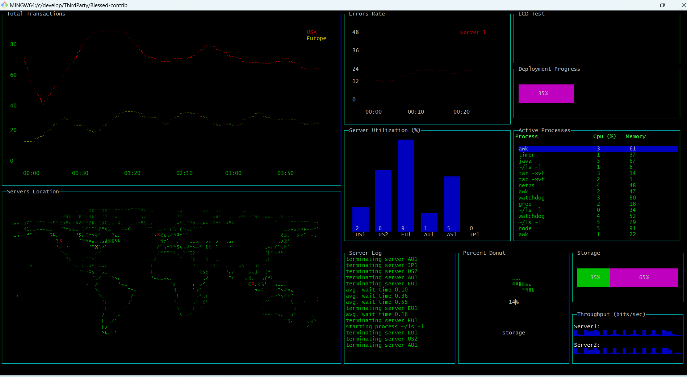

背景
有时候看到科技大片中，为了炫技术含量高、渗透能力强，在转场时会做一个代码雨效果并且给一个特效。比如很多人都看过的《黑客帝国》。代码雨效果大概如下图：
实现
JavaScript方式
依托于Web技术的跨平台效果，我们可以使用Html+JS的方式实现该效果，做到只需要有浏览器就可运行的效果。
首先我们定义html绘制区域和背景等：
<canvas id="code_rain_canvas" style="background:black" width="1440" height="900">
</canvas>
<style type="text/css">
body{
margin:0;
padding:0;
overflow:hidden;
}
</style>
然后，在script中定义动画效果。我们在window.onload方法中实现代码雨移动效果和随机显示的代码雨组成内容。
<script type="text/javascript">
window.onload = function codeRain() {
//获取画布对象
var canvas = document.getElementById("code_rain_canvas");
//获取画布的上下文
var context = canvas.getContext("2d");
var s = window.screen;
var W = canvas.width = s.width;
var H = canvas.height;
//获取浏览器屏幕的宽度和高度
//var W = window.innerWidth;
//var H = window.innerHeight;
//设置canvas的宽度和高度
canvas.width = W;
canvas.height = H;
//每个文字的字体大小
var fontSize = 12;
//计算列
var colunms = Math.floor(W / fontSize);
//记录每列文字的y轴坐标
var drops = [];
//给每一个文字初始化一个起始点的位置
for (var i = 0; i < colunms; i++) {
drops.push(0);
}
//运动的文字
var str = "0123456789abcdefghijklmnopqrstuvwxyzABCDEFGHIGKLMNOPQRSTUVWXYZ";
//4:fillText(str,x,y);原理就是去更改y的坐标位置
//绘画的函数
function draw() {
context.fillStyle = "rgba(0,0,0,.08)"; //遮盖层
context.fillRect(0, 0, W, H);
//给字体设置样式
context.font = "600 " + fontSize + "px Georgia";
//给字体添加颜色
//context.fillStyle = ["#33B5E5", "#0099CC", "#AA66CC", "#9933CC", "#99CC00", "#669900", "#FFBB33", "#FF8800", "#FF4444", "#CC0000"][parseInt(Math.random() * 10)];
context.fillStyle = ["green"];
//randColor();可以rgb,hsl, 标准色，十六进制颜色
//写入画布中
for (var i = 0; i < colunms; i++) {
var index = Math.floor(Math.random() * str.length);
var x = i * fontSize;
var y = drops[i] * fontSize;
context.fillText(str[index], x, y);
//如果要改变时间，肯定就是改变每次他的起点
if (y >= canvas.height && Math.random() > 0.99) {
drops[i] = 0;
}
drops[i]++;
}
};
function randColor() { //随机颜色
var r = Math.floor(Math.random() * 256);
var g = Math.floor(Math.random() * 256);
var b = Math.floor(Math.random() * 256);
return "rgb(" + r + "," + g + "," + b + ")";
}
draw();
setInterval(draw, 35);
};
</script>
主要方法是window.onload，该方法在网页加载完毕后立刻执行的操作（仅执行一次），不需要手动调用。
使用浏览器打开文件，可看到代码雨效果。此时在Chrome浏览器下，点击F11键，全屏显示即实现需求。执行后效果如下：

脚本方式
Windows系统中，我们还可以使用CMD执行BAT脚本的方式实现。但是效果不是很完美。
脚本如下：
@echo off
setlocal ENABLEDELAYEDEXPANSION
color 02
for /l %%i in (1,1,80) do (
set Down%%i=0
)
:loop
for /l %%j in (1,1,80) do (
set /a Down%%j-=1
if !down%%j! LSS 0 (
set /a Arrow%%j=!random!%%4
set /a Down%%j=!random!%%15+10
)
if "!Arrow%%j!" == "1" (
set /a chr=!random!%%2
set /p=!chr!运行效果如下：
使用工具实现
在Linux系统上，我们也可以使用cmatrix实现，它是一款linux环境的炫酷屏保软件，效果类似黑客帝国里的代码雨。
我们可以通过命令直接安装运行：
sudo apt-get install cmatrix
cmatrix
同时还可以通过命令指定输出的颜色：
cmatric -C red
总结
除了代码雨的工具外，还有很多好玩的工具，想要研究的朋友可以自行研究。比如Hollywood,Blessed-contrib创建动态仪表盘效果，让屏幕看起来就非常的炫酷。
以Blessed-contrib为例，我们执行过程如下：
首先安装npm和node.js环境，从GitHub上下载代码并安装运行：
git clone https://github.com/yaronn/blessed-contrib.git
cd blessed-contrib
npm install
node ./examples/dashboard.js
运行后可以看到效果：

更多的好玩工具请自己去探索吧。